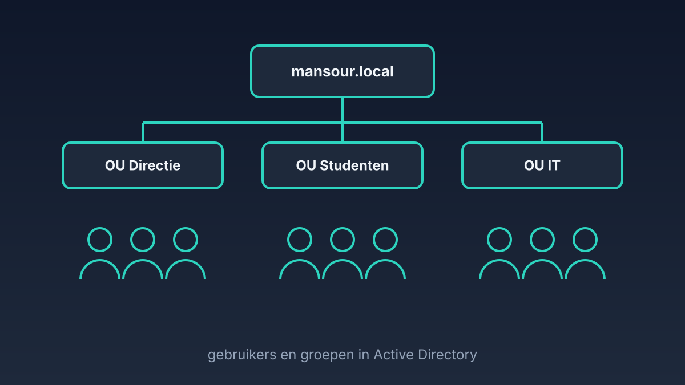
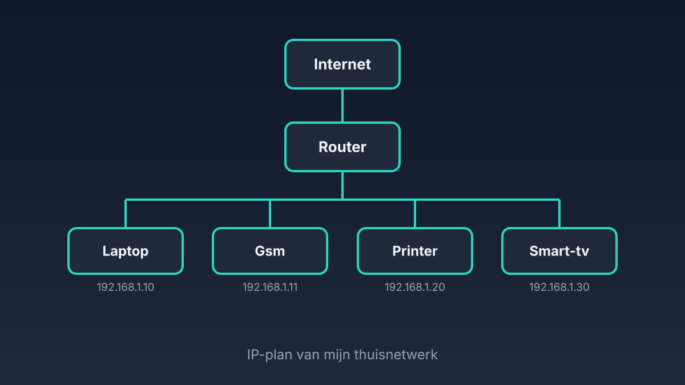
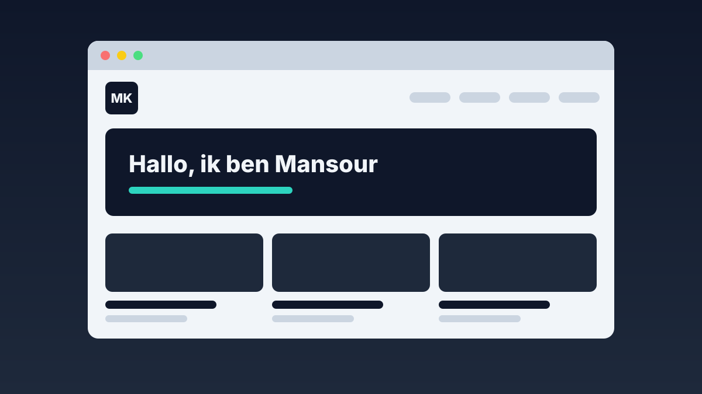
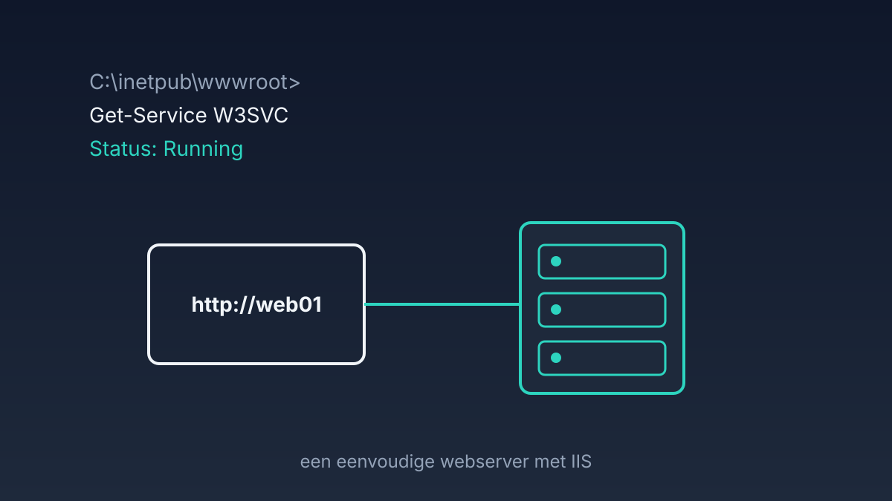

servers
Virtuele serveromgeving
Een kleine bedrijfsomgeving in VMware: een domeincontroller met Windows Server 2025 en twee clients met Windows 11.
Portfolio
Wat ik tot nu toe bouwde tijdens mijn opleiding en thuis. Elk project heeft een label: netwerk, servers of web.
servers
Een kleine bedrijfsomgeving in VMware: een domeincontroller met Windows Server 2025 en twee clients met Windows 11.

servers
Organisatie-eenheden, gebruikers en groepen voor een fictief bedrijf.

netwerk
Alle toestellen thuis opgelijst, met een IP-plan en een netwerkschema.

netwerk
Een router, twee switches en vier pc's verbonden en getest met ping.

web
Deze website, gebouwd met HTML en Tailwind CSS vanuit mijn eigen wireframes.

web
IIS op Windows Server geïnstalleerd en een eerste webpagina gepubliceerd in het testnetwerk.